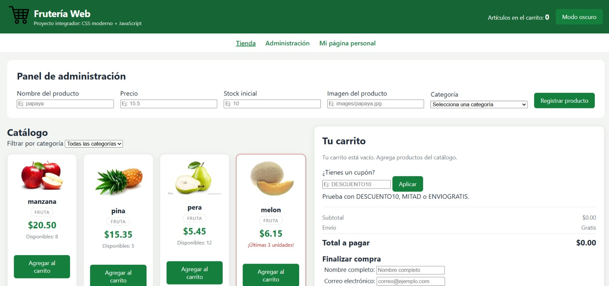

Desarrollo web
Creación de interfaces y páginas web utilizando HTML, CSS y JavaScript.
Ingeniería de Sistemas · Desarrollo de software.
Me interesa construir proyectos funcionales, explorar nuevas tecnologías y seguir fortaleciendo mis conocimientos en programación y desarrollo web.

Soy estudiante de Ingeniería de Sistemas con interés en el desarrollo de software y en la manera en que la tecnología puede utilizarse para resolver problemas reales. Durante mi formación he trabajado en diferentes proyectos académicos que me han permitido fortalecer conocimientos en programación, desarrollo web y herramientas para el trabajo colaborativo.
Me interesa seguir aprendiendo, enfrentar nuevos retos y convertir ideas en soluciones cada vez más completas. Fuera del ámbito académico disfruto practicar fútbol, mantenerme activo, conocer nuevas tecnologías y dedicar tiempo a actividades que aporten a mi crecimiento personal y profesional.
Creación de interfaces y páginas web utilizando HTML, CSS y JavaScript.
Aplicación de lógica, algoritmos y resolución de problemas mediante código.
Uso de control de versiones, ramas, commits y repositorios para organizar el desarrollo de proyectos.
Análisis de situaciones, identificación de necesidades y búsqueda de soluciones prácticas mediante tecnología.
Comunicación, organización y colaboración durante el desarrollo de proyectos académicos y tecnológicos.
Interés constante por nuevas tecnologías, herramientas y conocimientos que fortalezcan mi formación profesional.

Proyecto desarrollado con HTML, CSS y JavaScript para gestionar productos mediante un formulario y actualizar dinámicamente un catálogo.
Espacio reservado para nuevos desarrollos, retos académicos y proyectos que seguirán ampliando este portafolio.
Estoy abierto a compartir ideas, colaborar en proyectos y seguir construyendo experiencia en el desarrollo de software. Si quieres conocer más sobre mi trabajo o ponerte en contacto conmigo, puedes hacerlo a través de los siguientes medios.